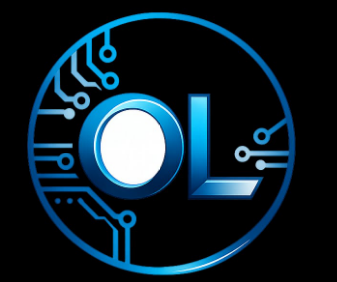

OrtoLogic Soluções em TIA OrtoLogic Soluções em TI desenvolveu o OrtoFactory, um sistema MES (Manufacturing Execution System) completo para a indústria farmacêutica — da execução guiada em chão de fábrica até a trilha de auditoria eletrônica, pensado desde o primeiro dia para 21 CFR Part 11 e os princípios ALCOA+.
Consultoria e desenvolvimento de software especializada em sistemas de execução e conformidade regulatória para a indústria farmacêutica.
Projetamos e construímos o OrtoFactory do zero — arquitetura, banco de dados, backend, e cada tela da interface — como prova prática de que é possível entregar um MES robusto, auditável e orientado a objetos, sem depender de plataformas genéricas adaptadas às pressas para o chão de fábrica farmacêutico.
Um MES completo — da definição da receita até a assinatura eletrônica final — construído para operações reguladas.
Passo a passo controlado por fase e operação, sem margem para pular etapas obrigatórias de produção.
Autenticação por login e senha em cada etapa crítica, com invalidação em cascata quando um dado assinado é alterado.
Toda alteração de dado é registrada — quem, quando, de onde, valor antes e depois — sem exceção e sem perda mesmo em registros excluídos.
Interface e documentos gerados em 11 línguas, com troca de idioma sem tocar em código.
Importação de materiais, recursos e receitas, e movimentações de estoque sincronizadas com o ERP.
Certificados e relatórios exportados com proteção criptográfica, prontos para auditoria regulatória.
Diretor Comercial